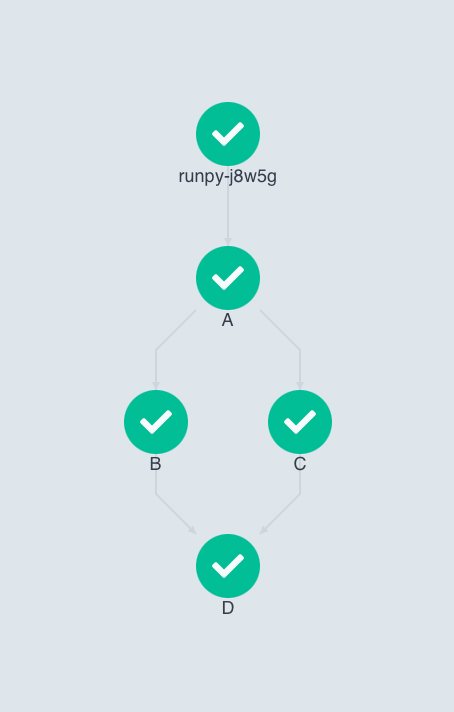
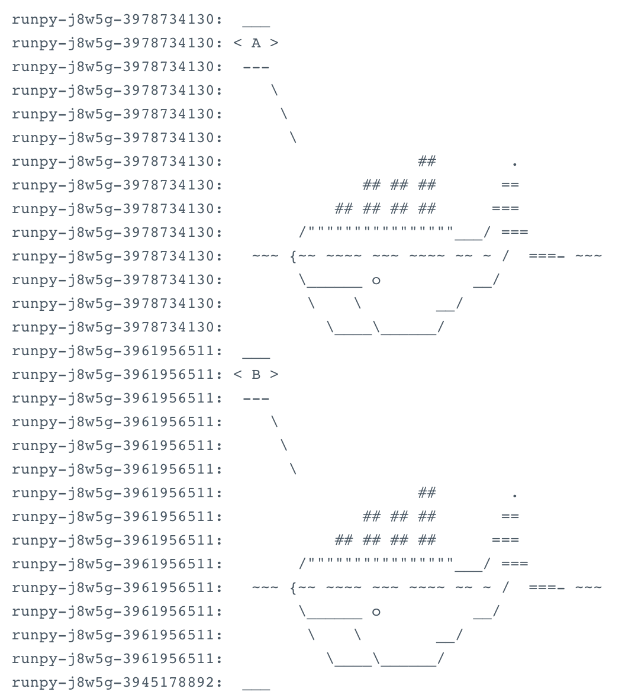
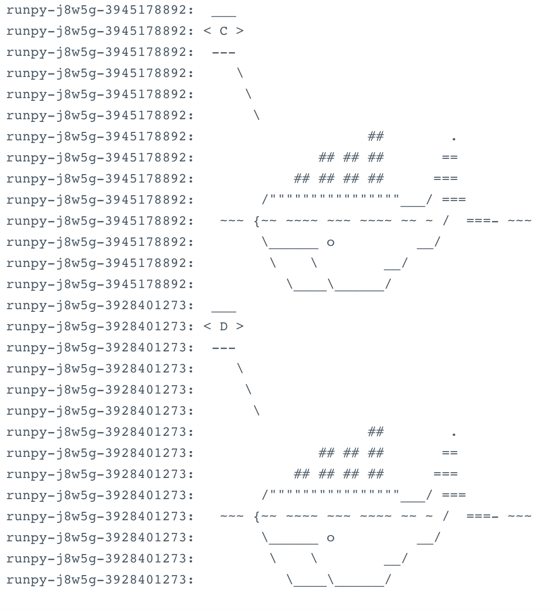

Pipelines#
1. Basics of GEOAnalytics Canada Pipelines#
The GeoAnalytics Canada Pipeline system helps with developing and building portable, scalable Earth Observation pre-processing pipelines and machine learning (ML) workflows based on Docker containers.
The Pipelines platform consists of:
A UI for managing and tracking pipelines and their execution. The EO4PH Pipeline UI is available here
An engine for scheduling a pipeline’s execution
An SDK for defining, building, and deploying pipelines in Python. The SDK we use is the Couler python library
A pipeline is a representation of a ML workflow containing the parameters required to run the pipeline and the inputs and outputs of each component. Each pipeline component is a self-contained code block, packaged as a Docker image.
In this tutorial notebook, we will build our first Pipeline.
First, run the following command to install all the packages and dependencies required for this tutorial.
[ ]:
# install the Couler SDK from source
!python3 -m pip install git+https://github.com/couler-proj/couler --ignore-installed
2. Building A Basic Pipeline#
After installing the required dependencies for this tutorial, we then need to import the necessary modules. Next, we define a job template that pacakges each step into its own Container.
[15]:
import os
import couler.argo as couler
from couler.argo_submitter import ArgoSubmitter
from couler.core.templates.toleration import Toleration
[16]:
def job(name):
# two tolerations are needed to ensure the job is scheduled on the correct GEOAnalytics Canada cluster nodes.
toleration = Toleration(os.getenv('WORKFLOW_NODE_SELECTOR_KEY'), 'NoSchedule', 'Exists')
couler.add_toleration(toleration) # pipeline/nodepool=pipe:NoSchedule
toleration2 = Toleration('kubernetes.azure.com/scalesetpriority', 'NoSchedule', 'Exists')
couler.add_toleration(toleration2)
# Set the container to run. You could use your own container hosted in the GEOAnalytics Canada container registry, or in this case docker/whalesay
# Documentation on the docker/whalesay image and arguments is here: https://hub.docker.com/r/docker/whalesay/
couler.run_container(
image="docker/whalesay:latest",
command=["cowsay"],
# pass the name as an argument to the whalesay docker image
args=[name],
step_name=name,
node_selector={os.getenv('WORKFLOW_NODE_SELECTOR_KEY'):os.getenv('WORKFLOW_NODE_SELECTOR_VALUE')}
)
The next two functions demonstrate the dependencies between each pipeline step that can be created. Further down, we will see a more complex example, however, declaring simple dependencies such as these to block subsequent steps from operating before a given step has finished running can prove to be a powerful tool when building complex products.
[17]:
# A
# / \
# B C
# /
# D
def linear_pipeline():
couler.set_dependencies(lambda: job(name="A"), dependencies=None)
couler.set_dependencies(lambda: job(name="B"), dependencies=["A"])
couler.set_dependencies(lambda: job(name="C"), dependencies=["A"])
couler.set_dependencies(lambda: job(name="D"), dependencies=["B"])
[18]:
# A
# / \
# B C
# \ /
# D
def diamond_pipeline():
couler.dag( # DAG: Directed Acyclic Graph (the same as a 'pipeline')
[
[lambda: job(name="A")],
[lambda: job(name="A"), lambda: job(name="B")], # A -> B
[lambda: job(name="A"), lambda: job(name="C")], # A -> C
[lambda: job(name="B"), lambda: job(name="D")], # B -> D
[lambda: job(name="C"), lambda: job(name="D")], # C -> D
]
)
[19]:
# linear_pipeline()
diamond_pipeline()
We then will submit our job to the pipeline namespace where jobs will be run. Using any other namespace will just result in errors. First, we declare which submitter we will be using - we will use the ArgoSubmitter as the backend is leveraging Argo.
[21]:
submitter = ArgoSubmitter(namespace='pipeline') # namespace must be 'pipeline'
INFO:root:Argo submitter namespace: pipeline
INFO:root:Cannot find local k8s config. Trying in-cluster config.
INFO:root:Initialized with in-cluster config.
Finally, we submit our Directed Acyclic Graph (DAG) that represents our “pipeline” we defined above to the Executor.
[22]:
deployment = couler.run(submitter=submitter)
deployment
INFO:root:Checking workflow name/generatedName runpy-
INFO:root:Submitting workflow to Argo
INFO:root:Workflow runpy-j8w5g has been submitted in "pipeline" namespace!
[22]:
{'apiVersion': 'argoproj.io/v1alpha1',
'kind': 'Workflow',
'metadata': {'creationTimestamp': '2022-09-27T02:44:08Z',
'generateName': 'runpy-',
'generation': 1,
'managedFields': [{'apiVersion': 'argoproj.io/v1alpha1',
'fieldsType': 'FieldsV1',
'fieldsV1': {'f:metadata': {'f:generateName': {}}, 'f:spec': {}},
'manager': 'OpenAPI-Generator',
'operation': 'Update',
'time': '2022-09-27T02:44:08Z'}],
'name': 'runpy-j8w5g',
'namespace': 'pipeline',
'resourceVersion': '42779483',
'uid': '6a864b5c-68d4-4bf0-8c2e-e4053f0b02e5'},
'spec': {'entrypoint': 'runpy',
'templates': [{'dag': {'tasks': [{'arguments': {'parameters': [{'name': 'para-A-0',
'value': 'A'}]},
'name': 'A',
'template': 'A'},
{'arguments': {'parameters': [{'name': 'para-B-0', 'value': 'B'}]},
'dependencies': ['A'],
'name': 'B',
'template': 'B'},
{'arguments': {'parameters': [{'name': 'para-C-0', 'value': 'C'}]},
'dependencies': ['A'],
'name': 'C',
'template': 'C'},
{'arguments': {'parameters': [{'name': 'para-D-0', 'value': 'D'}]},
'dependencies': ['B', 'C'],
'name': 'D',
'template': 'D'}]},
'name': 'runpy'},
{'container': {'args': ['{{inputs.parameters.para-A-0}}'],
'command': ['cowsay'],
'image': 'docker/whalesay:latest'},
'inputs': {'parameters': [{'name': 'para-A-0'}]},
'name': 'A',
'nodeSelector': {'pipeline': 'small'}},
{'container': {'args': ['{{inputs.parameters.para-B-0}}'],
'command': ['cowsay'],
'image': 'docker/whalesay:latest'},
'inputs': {'parameters': [{'name': 'para-B-0'}]},
'name': 'B',
'nodeSelector': {'pipeline': 'small'}},
{'container': {'args': ['{{inputs.parameters.para-C-0}}'],
'command': ['cowsay'],
'image': 'docker/whalesay:latest'},
'inputs': {'parameters': [{'name': 'para-C-0'}]},
'name': 'C',
'nodeSelector': {'pipeline': 'small'}},
{'container': {'args': ['{{inputs.parameters.para-D-0}}'],
'command': ['cowsay'],
'image': 'docker/whalesay:latest'},
'inputs': {'parameters': [{'name': 'para-D-0'}]},
'name': 'D',
'nodeSelector': {'pipeline': 'small'}}],
'tolerations': [{'effect': 'NoSchedule',
'key': 'ga.nodepool/type',
'operator': 'Exists'},
{'effect': 'NoSchedule',
'key': 'kubernetes.azure.com/scalesetpriority',
'operator': 'Exists'},
{'effect': 'NoSchedule', 'key': 'ga.nodepool/type', 'operator': 'Exists'},
{'effect': 'NoSchedule',
'key': 'kubernetes.azure.com/scalesetpriority',
'operator': 'Exists'},
{'effect': 'NoSchedule', 'key': 'ga.nodepool/type', 'operator': 'Exists'},
{'effect': 'NoSchedule',
'key': 'kubernetes.azure.com/scalesetpriority',
'operator': 'Exists'},
{'effect': 'NoSchedule', 'key': 'ga.nodepool/type', 'operator': 'Exists'},
{'effect': 'NoSchedule',
'key': 'kubernetes.azure.com/scalesetpriority',
'operator': 'Exists'},
{'effect': 'NoSchedule', 'key': 'ga.nodepool/type', 'operator': 'Exists'},
{'effect': 'NoSchedule',
'key': 'kubernetes.azure.com/scalesetpriority',
'operator': 'Exists'},
{'effect': 'NoSchedule', 'key': 'ga.nodepool/type', 'operator': 'Exists'},
{'effect': 'NoSchedule',
'key': 'kubernetes.azure.com/scalesetpriority',
'operator': 'Exists'},
{'effect': 'NoSchedule', 'key': 'ga.nodepool/type', 'operator': 'Exists'},
{'effect': 'NoSchedule',
'key': 'kubernetes.azure.com/scalesetpriority',
'operator': 'Exists'},
{'effect': 'NoSchedule', 'key': 'ga.nodepool/type', 'operator': 'Exists'},
{'effect': 'NoSchedule',
'key': 'kubernetes.azure.com/scalesetpriority',
'operator': 'Exists'},
{'effect': 'NoSchedule', 'key': 'ga.nodepool/type', 'operator': 'Exists'},
{'effect': 'NoSchedule',
'key': 'kubernetes.azure.com/scalesetpriority',
'operator': 'Exists'}]}}
The following screenshot shows the successful run that the above JSON pipeline object represents.

And finally, the output of the above pipeline:

These screenshots were gathered from our Pipeline UI: https://pipeline.eo4ph.geoanalytics.ca.
3. Building A Pipeline that Handles Failures#
In this example, we create a pipeline that handles failures in previous steps gracefully.
Purely to illustrate how failures can be handled, we are using Sen2Cor as an example. Note: were are not actually running Sen2Cor here!. The idea is to begin with the most recent version of Sen2Cor and then if an error occurs while processing the L1C input data then the pipeline will failover to the next release of Sen2Cor. If the process fails over on all conditions, an error job is thrown to perform what would be any cleanup and notification that processing of the file failed.
This pipeline can be adapted into many other uses.
First, after importing our libraries, we build a template job function that can take in callable objects to be inserted in to a Python3.6 image.
[1]:
import sys
import couler.argo as couler
from couler.argo_submitter import ArgoSubmitter
from couler.core.templates.toleration import Toleration
from couler.core.templates.volume_claim import VolumeClaimTemplate
from couler.core.constants import WFStatus
[10]:
def job(name: str, source: callable):
# two tolerations are needed to ensure the job is scheduled on the correct GEOAnalytics Canada cluster nodes.
toleration = Toleration('ga.nodepool/type', 'NoSchedule', 'Exists')
couler.add_toleration(toleration) # pipeline/nodepool=pipe:NoSchedule
toleration2 = Toleration('kubernetes.azure.com/scalesetpriority', 'NoSchedule', 'Exists')
couler.add_toleration(toleration2)
# we aren't actually going to run Sen2Cor, instead we're just running a docker image that runs python version 3.6
# If we were actually going to run Sen2Cor, we would have to create a docker image for each version of Sen2Cor we want to run.
# The arguments for run_script() is here :https://github.com/couler-proj/couler/blob/master/couler/core/run_templates.py#L41
return couler.run_script(
image="python:alpine3.6",
# the source will be injected inside of the container and run
source=source,
step_name=name,
node_selector={'pipeline':'small'}
)
Next, we define our steps that represent success or failure of running the Sen2Cor binary.
[9]:
def gather_files():
return ['ras1','ras2','ras3','ras4']
def preprocess():
print(f'preprocess')
def sen2cor290():
# choose randomly if this function will succeed or fail
import random
task = ['success', 'fail']
res = random.randint(0, 1)
res = task[res]
print(f'{res}')
if res == 'fail':
sys.exit(2)
def sen2cor280():
# choose randomly if this function will succeed or fail
import random
task = ['success', 'fail']
res = random.randint(0, 1)
res = task[res]
print(f'{res}')
if res == 'fail':
sys.exit(2)
def sen2cor255():
# choose randomly if this function will succeed or fail
import random
task = ['success', 'fail']
res = random.randint(0, 1)
res = task[res]
print(f'{res}')
if res == 'fail':
sys.exit(2)
def fin():
print('fin')
def err():
print('error')
Once decalared, we wrap our functions inside of a submittable job
[11]:
def preprocess_job():
return job(name='preprocess', source=preprocess)
def sen2cor290_job():
return job(name='sen2cor290', source=sen2cor290)
def sen2cor280_job():
return job(name='sen2cor280', source=sen2cor280)
def sen2cor255_job():
return job(name='sen2cor255', source=sen2cor255)
def fin_job():
return job(name='fin', source=fin)
def err_job():
return job(name='err', source=err)
We now need to build our pipeline.
First we gather our files, which is generally a list and then any necessary preprocessing steps. Once ready, the input is passed into our first Step: “Sen2Cor version 2.9.0”. Using Boolean logic and the set_dependencies function, we can determine how the failovers are managed.
[12]:
def setup_failover_pipeline():
couler.set_dependencies(
preprocess_job,
dependencies=None
)
couler.set_dependencies(
sen2cor290_job,
dependencies='preprocess.Succeeded'
)
couler.set_dependencies(
sen2cor280_job,
dependencies='sen2cor290.Failed'
)
couler.set_dependencies(
sen2cor255_job,
dependencies='sen2cor280.Failed'
)
couler.set_dependencies(
err_job,
dependencies='sen2cor280.Failed && sen2cor290.Failed && sen2cor255.Failed'
)
couler.set_dependencies(
fin_job,
dependencies='sen2cor290.Succeeded || sen2cor280.Succeeded || sen2cor255.Succeeded'
)
setup_failover_pipeline()
Finally, we submit our job to the Executor!
[13]:
submitter = ArgoSubmitter(namespace=os.getenv('WORKFLOW_NS'))
INFO:root:Argo submitter namespace: pipeline
INFO:root:Cannot find local k8s config. Trying in-cluster config.
INFO:root:Initialized with in-cluster config.
[14]:
couler.run(submitter=submitter)
INFO:root:Checking workflow name/generatedName runpy-
INFO:root:Submitting workflow to Argo
INFO:root:Workflow runpy-knlcd has been submitted in "pipeline" namespace!
[14]:
{'apiVersion': 'argoproj.io/v1alpha1',
'kind': 'Workflow',
'metadata': {'creationTimestamp': '2022-09-27T02:37:01Z',
'generateName': 'runpy-',
'generation': 1,
'managedFields': [{'apiVersion': 'argoproj.io/v1alpha1',
'fieldsType': 'FieldsV1',
'fieldsV1': {'f:metadata': {'f:generateName': {}}, 'f:spec': {}},
'manager': 'OpenAPI-Generator',
'operation': 'Update',
'time': '2022-09-27T02:37:01Z'}],
'name': 'runpy-knlcd',
'namespace': 'pipeline',
'resourceVersion': '42775569',
'uid': 'd3fef132-6be1-47f6-bd21-0c8ef710b7d0'},
'spec': {'entrypoint': 'runpy',
'templates': [{'dag': {'tasks': [{'name': 'preprocess',
'template': 'preprocess'},
{'depends': 'preprocess.Succeeded',
'name': 'sen2cor290',
'template': 'sen2cor290'},
{'depends': 'sen2cor290.Failed',
'name': 'sen2cor280',
'template': 'sen2cor280'},
{'depends': 'sen2cor280.Failed',
'name': 'sen2cor255',
'template': 'sen2cor255'},
{'depends': 'sen2cor280.Failed && sen2cor290.Failed && sen2cor255.Failed',
'name': 'err',
'template': 'err'},
{'depends': 'sen2cor290.Succeeded || sen2cor280.Succeeded || sen2cor255.Succeeded',
'name': 'fin',
'template': 'fin'}]},
'name': 'runpy'},
{'name': 'preprocess',
'nodeSelector': {'pipeline': 'small'},
'script': {'command': ['python'],
'image': 'python:alpine3.6',
'source': "\nprint(f'preprocess')\n"}},
{'name': 'sen2cor290',
'nodeSelector': {'pipeline': 'small'},
'script': {'command': ['python'],
'image': 'python:alpine3.6',
'source': "\ntask = ['success', 'fail']\nres = random.randint(0, 1)\nres = task[res]\nprint(f'{res}')\nif res == 'fail':\n sys.exit(2)\n"}},
{'name': 'sen2cor280',
'nodeSelector': {'pipeline': 'small'},
'script': {'command': ['python'],
'image': 'python:alpine3.6',
'source': "\ntask = ['success', 'fail']\nres = random.randint(0, 1)\nres = task[res]\nprint(f'{res}')\nif res == 'fail':\n sys.exit(2)\n"}},
{'name': 'sen2cor255',
'nodeSelector': {'pipeline': 'small'},
'script': {'command': ['python'],
'image': 'python:alpine3.6',
'source': "\ntask = ['success', 'fail']\nres = random.randint(0, 1)\nres = task[res]\nprint(f'{res}')\nif res == 'fail':\n sys.exit(2)\n"}},
{'name': 'err',
'nodeSelector': {'pipeline': 'small'},
'script': {'command': ['python'],
'image': 'python:alpine3.6',
'source': "\nprint('error')\n"}},
{'name': 'fin',
'nodeSelector': {'pipeline': 'small'},
'script': {'command': ['python'],
'image': 'python:alpine3.6',
'source': "\nprint('fin')\n"}}],
'tolerations': [{'effect': 'NoSchedule',
'key': 'ga.nodepool/type',
'operator': 'Exists'},
{'effect': 'NoSchedule',
'key': 'kubernetes.azure.com/scalesetpriority',
'operator': 'Exists'},
{'effect': 'NoSchedule', 'key': 'ga.nodepool/type', 'operator': 'Exists'},
{'effect': 'NoSchedule',
'key': 'kubernetes.azure.com/scalesetpriority',
'operator': 'Exists'},
{'effect': 'NoSchedule', 'key': 'ga.nodepool/type', 'operator': 'Exists'},
{'effect': 'NoSchedule',
'key': 'kubernetes.azure.com/scalesetpriority',
'operator': 'Exists'},
{'effect': 'NoSchedule', 'key': 'ga.nodepool/type', 'operator': 'Exists'},
{'effect': 'NoSchedule',
'key': 'kubernetes.azure.com/scalesetpriority',
'operator': 'Exists'},
{'effect': 'NoSchedule', 'key': 'ga.nodepool/type', 'operator': 'Exists'},
{'effect': 'NoSchedule',
'key': 'kubernetes.azure.com/scalesetpriority',
'operator': 'Exists'},
{'effect': 'NoSchedule', 'key': 'ga.nodepool/type', 'operator': 'Exists'},
{'effect': 'NoSchedule',
'key': 'kubernetes.azure.com/scalesetpriority',
'operator': 'Exists'}]}}
[ ]: